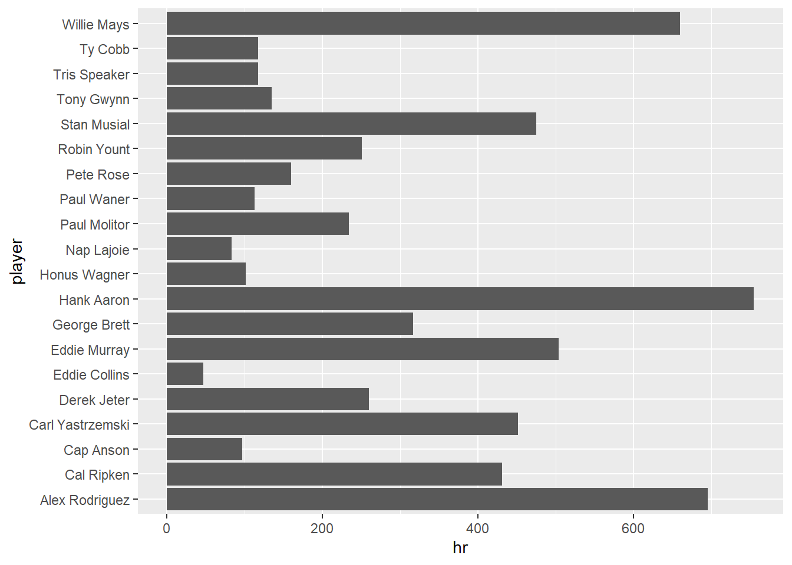

3 Data Visualization
3.1 Bar Chart
## # A tibble: 1,564 x 9
## player_id player h doubles triples hr ab g slg
## <chr> <chr> <dbl> <dbl> <dbl> <dbl> <dbl> <dbl> <dbl>
## 1 ruthba01 Babe Ruth 2873 506 136 714 8398 2503 0.690
## 2 willite01 Ted Williams 2654 525 71 521 7706 2292 0.634
## 3 gehrilo01 Lou Gehrig 2721 534 163 493 8001 2164 0.632
## 4 foxxji01 Jimmie Foxx 2646 458 125 534 8134 2317 0.609
## 5 bondsba01 Barry Bonds 2935 601 77 762 9847 2986 0.607
## 6 greenha01 Hank Greenberg 1628 379 71 331 5193 1394 0.605
## 7 mcgwima01 Mark McGwire 1626 252 6 583 6187 1874 0.588
## 8 ramirma02 Manny Ramirez 2574 547 20 555 8244 2302 0.585
## 9 dimagjo01 Joe DiMaggio 2214 389 131 361 6821 1736 0.579
## 10 hornsro01 Rogers Hornsby 2930 541 169 301 8173 2259 0.577
## # ... with 1,554 more rows

Coordinate Flip

Reorder Factors
slgname %>%
top_n(20, h) %>%
ggplot(aes(x=fct_reorder(player,hr), y = hr)) +
geom_col() +
coord_flip()
Color Bars
slgname %>%
top_n(20, h) %>%
ggplot(aes(x=fct_reorder(player,hr), y = hr, fill = slg)) +
geom_col() +
coord_flip()
Update Labels
slgname %>%
top_n(20, h) %>%
ggplot(aes(x=fct_reorder(player,hr), y = hr, fill = slg)) +
geom_col() +
coord_flip() +
labs(x = "Player", y = "Home Runs", title = "Top 20 Home Run Hitters", fill = "Slugging Percentage",
subtitle = "1871-2016", caption = "*Among Players Who've Played at least 1000 games")
Scatter Plot
data %>%
filter(lg_id == "AL") %>%
mutate(team_id = fct_lump(team_id, n = 12)) %>%
filter(team_id != "Other") %>%
filter(complete.cases(.)) %>%
filter(year_id>1990) %>%
group_by(team_id,year_id) %>%
summarise_at(vars(g:gidp), ~sum(.)) %>%
ggplot(aes(x=year_id,y=hr,color = fct_reorder(team_id,-hr))) +
geom_point() 
data %>%
filter(lg_id == "AL") %>%
mutate(team_id = fct_lump(team_id, n = 12)) %>%
filter(team_id != "Other") %>%
filter(complete.cases(.)) %>%
filter(year_id>1990) %>%
group_by(team_id,year_id) %>%
summarise_at(vars(g:gidp), ~sum(.)) %>%
ggplot(aes(x=year_id,y=hr)) +
geom_point(aes(color = fct_reorder(team_id,-hr))) +
geom_smooth()## `geom_smooth()` using method = 'loess' and formula 'y ~ x'
data %>%
filter(lg_id == "AL") %>%
mutate(team_id = fct_lump(team_id, n = 12)) %>%
filter(team_id != "Other") %>%
filter(complete.cases(.)) %>%
filter(year_id>1990) %>%
group_by(team_id,year_id) %>%
summarise_at(vars(g:gidp), ~sum(.)) %>%
ggplot(aes(x=year_id,y=hr)) +
geom_point(aes(color = fct_reorder(team_id,-hr))) +
geom_smooth() +
facet_wrap(~team_id)## `geom_smooth()` using method = 'loess' and formula 'y ~ x'
3.2 Animation
library(gganimate)
p =
data %>%
filter(!is.na(lg_id)) %>%
group_by(year_id, team_id) %>%
summarise_at(vars(hr,so,bb,ab), ~sum(., na.rm = TRUE)) %>%
ungroup() %>%
inner_join(
data %>%
select(year_id,team_id,lg_id) %>%
distinct()) %>%
# pivot_longer(cols = hr:so) %>%
ggplot(aes(x=so,y=hr,color = bb,size = ab, group = year_id)) +
geom_point() +
facet_wrap(~lg_id) +
# labs(title = 'Year: {frame_time}') +
transition_states(year_id, transition_length=1, state_length=30) +
labs(title = 'Year: {closest_state}') +
enter_fade() +
exit_fade()
animate(p,
nframes = length(unique(data$year_id))*2)##
Frame 1 (0%)
Frame 2 (0%)
Frame 3 (1%)
Frame 4 (1%)
Frame 5 (1%)
Frame 6 (2%)
Frame 7 (2%)
Frame 8 (2%)
Frame 9 (3%)
Frame 10 (3%)
Frame 11 (3%)
Frame 12 (4%)
Frame 13 (4%)
Frame 14 (4%)
Frame 15 (5%)
Frame 16 (5%)
Frame 17 (5%)
Frame 18 (6%)
Frame 19 (6%)
Frame 20 (6%)
Frame 21 (7%)
Frame 22 (7%)
Frame 23 (7%)
Frame 24 (8%)
Frame 25 (8%)
Frame 26 (8%)
Frame 27 (9%)
Frame 28 (9%)
Frame 29 (9%)
Frame 30 (10%)
Frame 31 (10%)
Frame 32 (10%)
Frame 33 (11%)
Frame 34 (11%)
Frame 35 (11%)
Frame 36 (12%)
Frame 37 (12%)
Frame 38 (13%)
Frame 39 (13%)
Frame 40 (13%)
Frame 41 (14%)
Frame 42 (14%)
Frame 43 (14%)
Frame 44 (15%)
Frame 45 (15%)
Frame 46 (15%)
Frame 47 (16%)
Frame 48 (16%)
Frame 49 (16%)
Frame 50 (17%)
Frame 51 (17%)
Frame 52 (17%)
Frame 53 (18%)
Frame 54 (18%)
Frame 55 (18%)
Frame 56 (19%)
Frame 57 (19%)
Frame 58 (19%)
Frame 59 (20%)
Frame 60 (20%)
Frame 61 (20%)
Frame 62 (21%)
Frame 63 (21%)
Frame 64 (21%)
Frame 65 (22%)
Frame 66 (22%)
Frame 67 (22%)
Frame 68 (23%)
Frame 69 (23%)
Frame 70 (23%)
Frame 71 (24%)
Frame 72 (24%)
Frame 73 (25%)
Frame 74 (25%)
Frame 75 (25%)
Frame 76 (26%)
Frame 77 (26%)
Frame 78 (26%)
Frame 79 (27%)
Frame 80 (27%)
Frame 81 (27%)
Frame 82 (28%)
Frame 83 (28%)
Frame 84 (28%)
Frame 85 (29%)
Frame 86 (29%)
Frame 87 (29%)
Frame 88 (30%)
Frame 89 (30%)
Frame 90 (30%)
Frame 91 (31%)
Frame 92 (31%)
Frame 93 (31%)
Frame 94 (32%)
Frame 95 (32%)
Frame 96 (32%)
Frame 97 (33%)
Frame 98 (33%)
Frame 99 (33%)
Frame 100 (34%)
Frame 101 (34%)
Frame 102 (34%)
Frame 103 (35%)
Frame 104 (35%)
Frame 105 (35%)
Frame 106 (36%)
Frame 107 (36%)
Frame 108 (36%)
Frame 109 (37%)
Frame 110 (37%)
Frame 111 (38%)
Frame 112 (38%)
Frame 113 (38%)
Frame 114 (39%)
Frame 115 (39%)
Frame 116 (39%)
Frame 117 (40%)
Frame 118 (40%)
Frame 119 (40%)
Frame 120 (41%)
Frame 121 (41%)
Frame 122 (41%)
Frame 123 (42%)
Frame 124 (42%)
Frame 125 (42%)
Frame 126 (43%)
Frame 127 (43%)
Frame 128 (43%)
Frame 129 (44%)
Frame 130 (44%)
Frame 131 (44%)
Frame 132 (45%)
Frame 133 (45%)
Frame 134 (45%)
Frame 135 (46%)
Frame 136 (46%)
Frame 137 (46%)
Frame 138 (47%)
Frame 139 (47%)
Frame 140 (47%)
Frame 141 (48%)
Frame 142 (48%)
Frame 143 (48%)
Frame 144 (49%)
Frame 145 (49%)
Frame 146 (50%)
Frame 147 (50%)
Frame 148 (50%)
Frame 149 (51%)
Frame 150 (51%)
Frame 151 (51%)
Frame 152 (52%)
Frame 153 (52%)
Frame 154 (52%)
Frame 155 (53%)
Frame 156 (53%)
Frame 157 (53%)
Frame 158 (54%)
Frame 159 (54%)
Frame 160 (54%)
Frame 161 (55%)
Frame 162 (55%)
Frame 163 (55%)
Frame 164 (56%)
Frame 165 (56%)
Frame 166 (56%)
Frame 167 (57%)
Frame 168 (57%)
Frame 169 (57%)
Frame 170 (58%)
Frame 171 (58%)
Frame 172 (58%)
Frame 173 (59%)
Frame 174 (59%)
Frame 175 (59%)
Frame 176 (60%)
Frame 177 (60%)
Frame 178 (60%)
Frame 179 (61%)
Frame 180 (61%)
Frame 181 (61%)
Frame 182 (62%)
Frame 183 (62%)
Frame 184 (63%)
Frame 185 (63%)
Frame 186 (63%)
Frame 187 (64%)
Frame 188 (64%)
Frame 189 (64%)
Frame 190 (65%)
Frame 191 (65%)
Frame 192 (65%)
Frame 193 (66%)
Frame 194 (66%)
Frame 195 (66%)
Frame 196 (67%)
Frame 197 (67%)
Frame 198 (67%)
Frame 199 (68%)
Frame 200 (68%)
Frame 201 (68%)
Frame 202 (69%)
Frame 203 (69%)
Frame 204 (69%)
Frame 205 (70%)
Frame 206 (70%)
Frame 207 (70%)
Frame 208 (71%)
Frame 209 (71%)
Frame 210 (71%)
Frame 211 (72%)
Frame 212 (72%)
Frame 213 (72%)
Frame 214 (73%)
Frame 215 (73%)
Frame 216 (73%)
Frame 217 (74%)
Frame 218 (74%)
Frame 219 (75%)
Frame 220 (75%)
Frame 221 (75%)
Frame 222 (76%)
Frame 223 (76%)
Frame 224 (76%)
Frame 225 (77%)
Frame 226 (77%)
Frame 227 (77%)
Frame 228 (78%)
Frame 229 (78%)
Frame 230 (78%)
Frame 231 (79%)
Frame 232 (79%)
Frame 233 (79%)
Frame 234 (80%)
Frame 235 (80%)
Frame 236 (80%)
Frame 237 (81%)
Frame 238 (81%)
Frame 239 (81%)
Frame 240 (82%)
Frame 241 (82%)
Frame 242 (82%)
Frame 243 (83%)
Frame 244 (83%)
Frame 245 (83%)
Frame 246 (84%)
Frame 247 (84%)
Frame 248 (84%)
Frame 249 (85%)
Frame 250 (85%)
Frame 251 (85%)
Frame 252 (86%)
Frame 253 (86%)
Frame 254 (86%)
Frame 255 (87%)
Frame 256 (87%)
Frame 257 (88%)
Frame 258 (88%)
Frame 259 (88%)
Frame 260 (89%)
Frame 261 (89%)
Frame 262 (89%)
Frame 263 (90%)
Frame 264 (90%)
Frame 265 (90%)
Frame 266 (91%)
Frame 267 (91%)
Frame 268 (91%)
Frame 269 (92%)
Frame 270 (92%)
Frame 271 (92%)
Frame 272 (93%)
Frame 273 (93%)
Frame 274 (93%)
Frame 275 (94%)
Frame 276 (94%)
Frame 277 (94%)
Frame 278 (95%)
Frame 279 (95%)
Frame 280 (95%)
Frame 281 (96%)
Frame 282 (96%)
Frame 283 (96%)
Frame 284 (97%)
Frame 285 (97%)
Frame 286 (97%)
Frame 287 (98%)
Frame 288 (98%)
Frame 289 (98%)
Frame 290 (99%)
Frame 291 (99%)
Frame 292 (100%)
## Finalizing encoding... done!